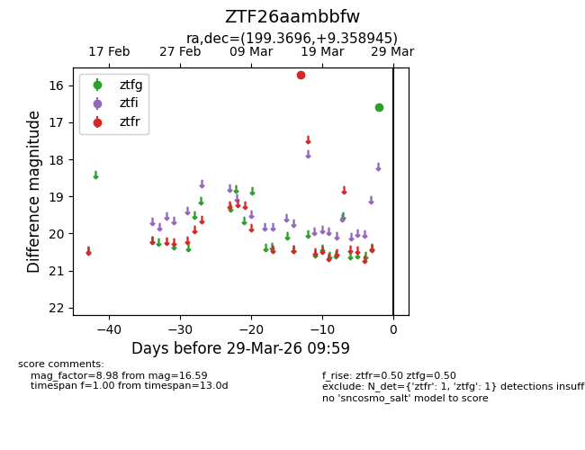
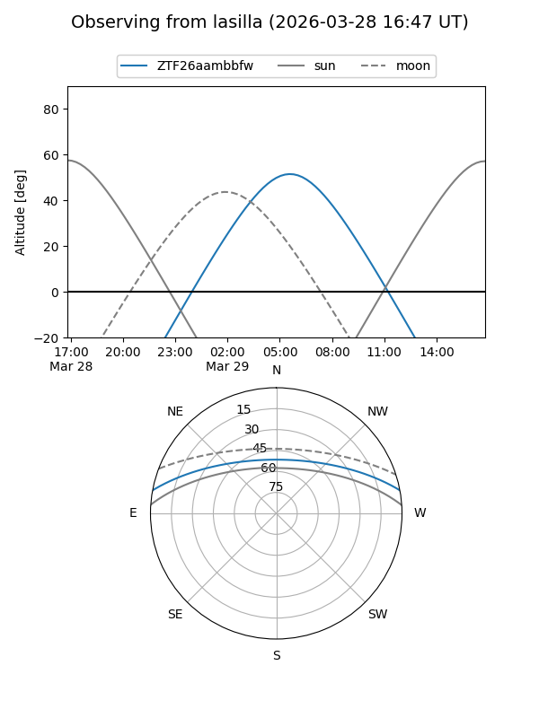
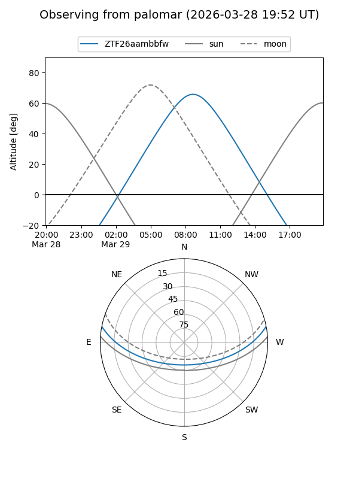

ZTF26aambbfw
Target ZTF26aambbfw at 2026-03-29 10:02
Aliases and brokers:
FINK: link
Lasair: link
ALeRCE: link
alt names
ZTF26aambbfw (ztf,fink_ztf)
Coordinates:
equatorial (ra, dec) = 199.3696,+9.35894
equatorial (HMS+DMS) = 13:17:28.71,+09:21:32.20
galactic (l, b) = (323.2406,+71.19667)
Flags:
Photometry:
last ztfg=16.59, ztfr=15.72
1 ztfg, 1 ztfr detections
Lightcurve

Visibility


Additional plots